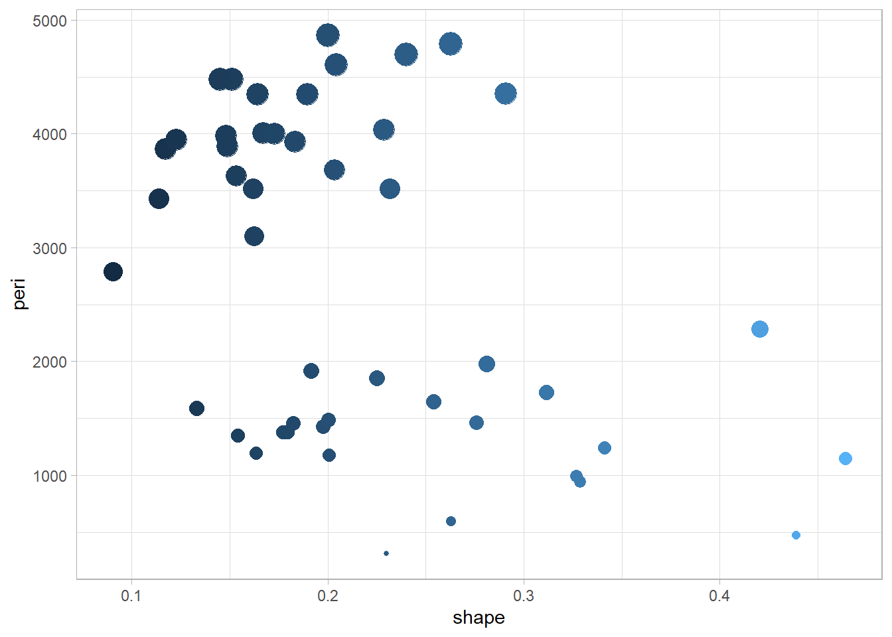
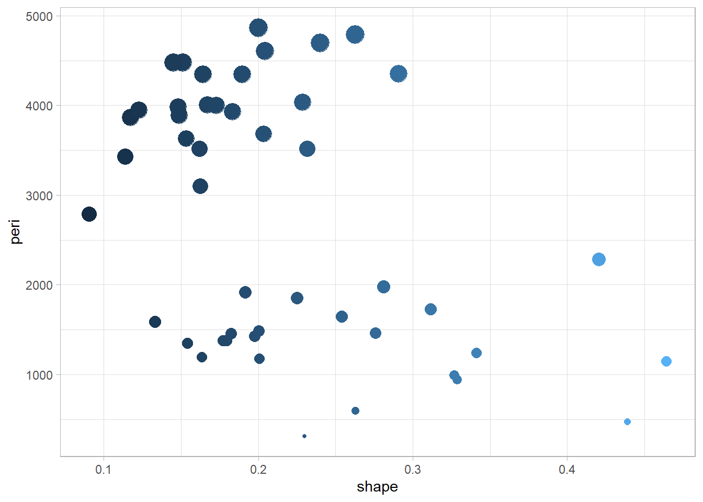
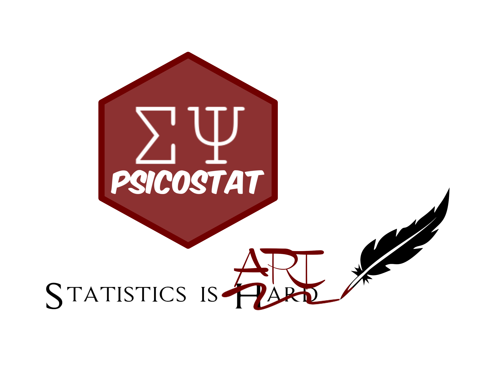

library(ggplot2)
ggplot(rock,
aes(y=peri,x=shape, color =shape, size = peri)) + geom_point() +
theme_light() + theme(legend.position = "none") 
Descrizione del mio dataset
Tabella del
Prima colonna più stretta della seconda
library(ggplot2)
ggplot(rock,
aes(y=peri,x=shape, color =shape, size = peri)) + geom_point() +
theme_light() + theme(legend.position = "none") 
Quarto enables you to weave together content and executable code into a finished document. To learn more about Quarto see https://quarto.org.
When you click the Render button a document will be generated that includes both content and the output of embedded code. You can embed code like this:
1 + 1!!! [1] 2You can add options to executable code like this
[1] 4The echo: false option disables the printing of code (only output is displayed).
{#fig-psicostat, width=“20%”, fig-align=“center”}
Le mie immagini